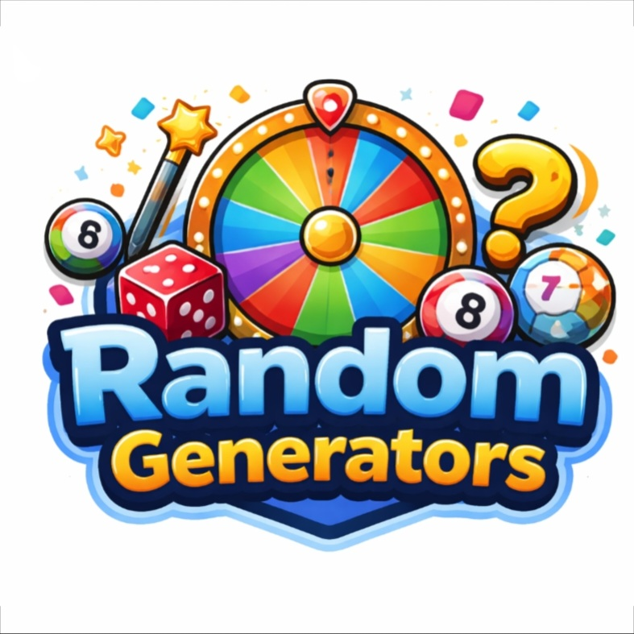

Overview
Purpose
There are a lot of randomizers out there for things like numbers, letters, nouns, verbs, grid coordinates, and other things. However, there isn't an easily accessible website that holds multiple of these, esspecially for ones that I have thought of that are more specific. So I want to make the website were I can host all of my randiomizers.
Audience
People who want a lot of randomness for fun ideas.
Dynamic elements
I will use JavaScript to be able to make buttons for each randomizer, and make an image for a grid randomizer.
Branding
Website Logo

Style Guide
Color Palette
Palette URL: https://coolors.co/396e94-e7c24f-a43312-381d2a-aabd8c| Primary | Secondary | Accent 1 | Accent 2 |
|---|---|---|---|
| #EF3C26 | #28C4F3 | #F9B81E | #8534C6 |
Pseudocode for your project
Make a grid for all the randomizers to fit into, Make a button for re-randomize, Make/find the images for the grid coordinates randomizer, Begin the JavaScript for the randomizers, and finish the CSS to make it presentable
Wireframes
Create wireframes for your project page(s). One for each page and list them here.
Landing page
All the squares are re-randomize buttons, except the item list maker, which will be a box that you can type into and the random item generator will pull from that list. There will be a button at the top to generate in all randomizers, and a option to select the size of the grid, and for some sizes (at least one size) of the grid, there will be an image to go with it.